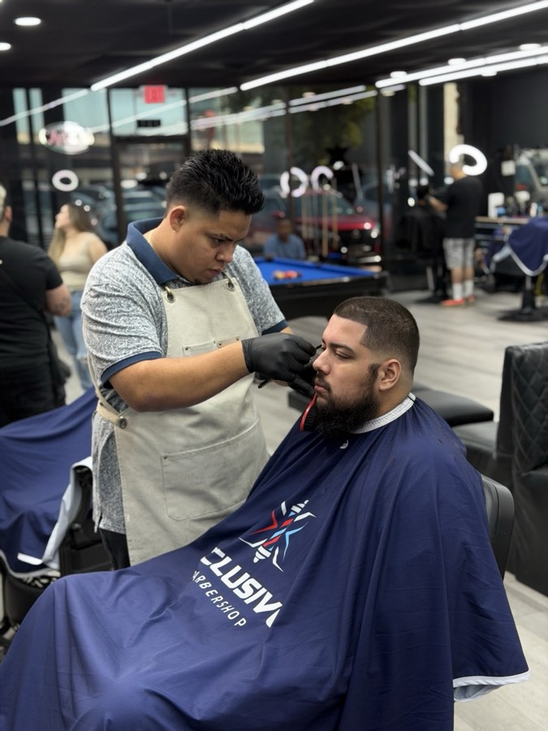

Products
The Best Beard Oils of 2025 — Ranked by Our Barbers

Walk into any grooming aisle and you'll find dozens of beard oils claiming to be the best. The problem is most of them overpromise and underdeliver. Our barbers use products every day on real clients — so we know what actually works vs. what just smells good. Here's our honest ranking for 2025.
What Makes a Great Beard Oil?
Before the list, let's talk about what we look for: a good beard oil should moisturize the skin underneath, soften coarse hairs without making them greasy, and have a scent that fades within 30 minutes. Anything that leaves residue, clogs pores, or makes a beard look oily after an hour doesn't make the cut.
#1 — Jojoba-Based Oils
Jojoba oil is technically a wax ester, which means it mimics the skin's natural sebum more closely than any other oil. It absorbs quickly, doesn't leave grease, and works on all beard lengths. Look for products with jojoba as the first ingredient — it's the foundation of most premium beard oils for a reason.
#2 — Argan Oil Blends
Called "liquid gold" for a reason — argan oil is packed with vitamin E and essential fatty acids that condition beard hair at the follicle level. Best for medium to long beards that tend to get dry and wiry. Apply a few drops after a shower when pores are open for maximum absorption.
#3 — Sweet Almond Oil
An underrated option that most clients overlook. Sweet almond oil is lightweight, fragrance-free (great if you're sensitive to scents), and excellent for reducing beard itch — especially during the early growth phase. It also keeps the skin under the beard hydrated without clogging pores.
What to Avoid
- Mineral oil — sits on top of hair instead of absorbing, clogs pores over time
- Strong artificial fragrances — can irritate sensitive skin and clash with cologne
- Heavy waxes in an "oil" — if it doesn't flow freely from the bottle, it's not a true oil
- Anything with alcohol high on the ingredient list — strips natural moisture
How to Apply Beard Oil Correctly
Most people use too much. For a short to medium beard, 3–5 drops is all you need. Rub it between your palms, work it into the beard starting at the skin, then comb through to distribute evenly. Do this right after a shower while the beard is slightly damp — never on a completely dry beard.
Come in for a Beard Lineup
Our barbers will shape and condition your beard to perfection. Book your appointment today.
Book Now